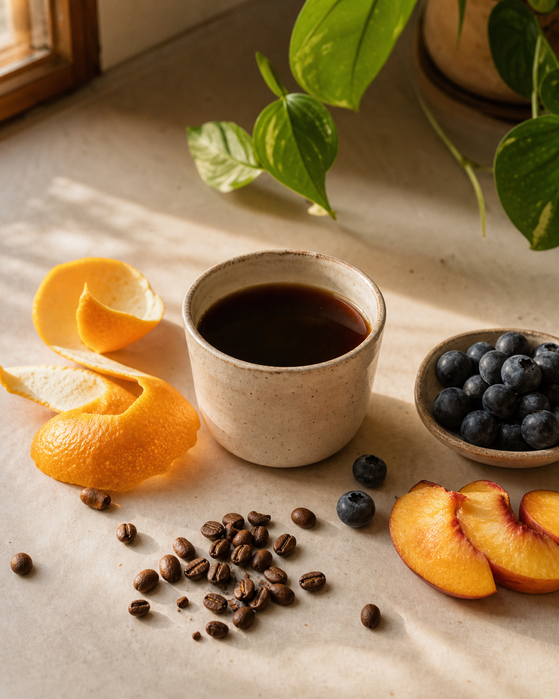
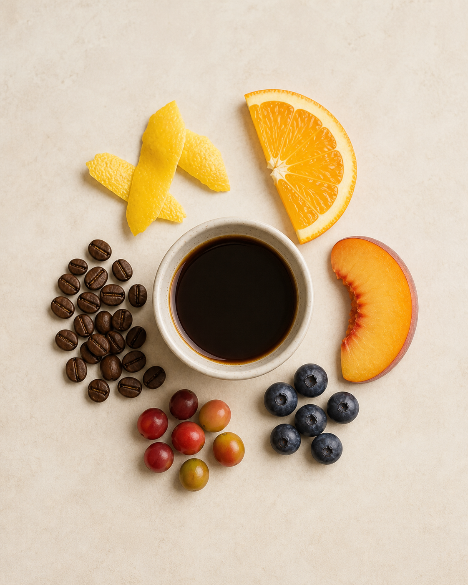

Tasting Notes
Fruity coffee.Nobody added any fruit.
Here's where those taste notes actually come from.

Here's where those taste notes actually come from.
Coffee absorbs flavour compounds from its environment — soil, altitude, temperature, shade. Beans grown at higher altitudes develop more complex acids, which read as fruity or floral when you drink them.
Same bean, different farm = completely different cup. Coffee is like that.
When the fruit (the coffee cherry) is left on the bean while it dries, the sugars ferment into the bean. That's where that heavy, jammy, berry flavour comes from. Washed coffees are stripped of fruit first — so they taste cleaner, brighter, more acidic.
Same origin, different process = two completely different cups. Not weird. Just coffee.

"Fruity" usually means more acidity and a lighter roast. If you normally drink dark espresso, start with stone fruit notes before going full blueberry bomb. Work your way across.
Or just buy a small 100g bag and find out. Works every time, honestly.